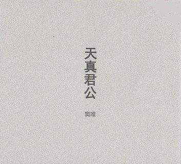
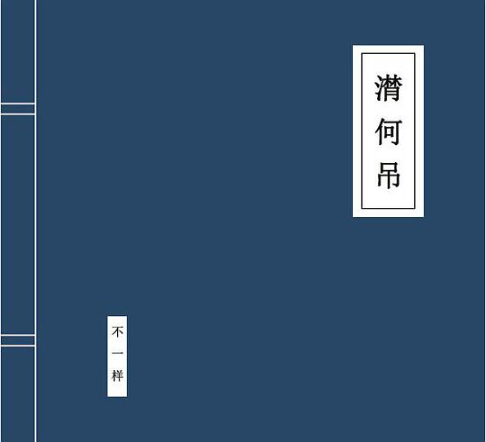

When I'm not thinking about math, I enjoy watching movies and listening to music. In particular, I love albums of musician Duo, Wei. To help you get a taste of his unique but diverse music style, I recommend listening to his album 天真君公(Tian Zhen Jun Gong) first.

His another album I will recommend is 殃金咒(Yang Jin Mantra) (Be prepared before clicking!).
Yang Jin Mantra is a Buddhist mantra being recited when a people die, but her/his soul hasn't been assigned to go the hell or heaven. This album is said to be inspired by the news [1] that thousands of dead pigs floated on the Yangtze River (the longest river in China), which drove Duo, Wei to record this album to wake people's environmentally conscious. Another theme-related album (with his collaborators) that I'll also strongly recommend is 潸何吊(Shan He Diao).

[1] An interview where the motivation of creating Yang Jin Mantra is mentioned.